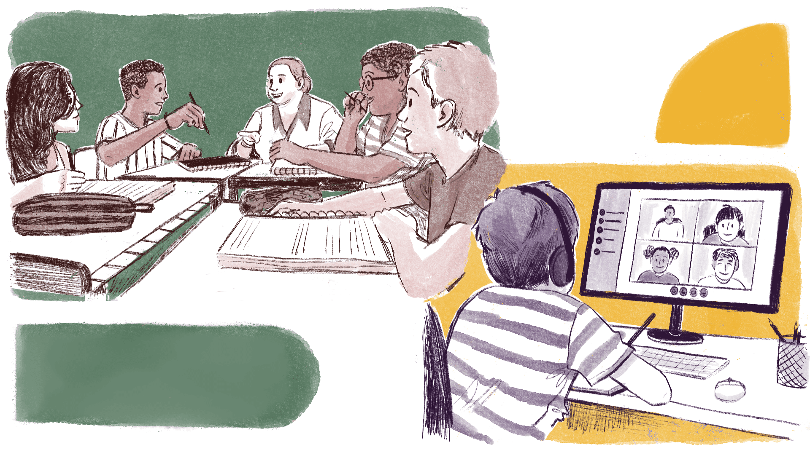
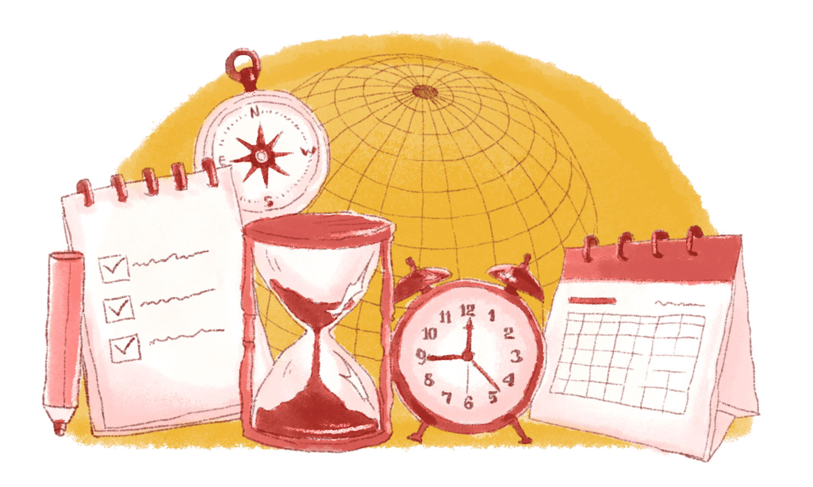

Ambientes Virtuais de Aprendizagem
Você sabe o que é um AVA?
É possível comparar um ambiente virtual de aprendizagem (AVA) a uma escola ou instituição de ensino superior (IES) na qual adentramos por meio de um computador ou celular.
Acompanhe o raciocínio: ao pensarmos numa escola ou numa IES, as imagens que prontamente surgem são de professores, estudantes, salas de aula, livros e materiais didáticos, áreas de convivência e outras características que podem variar conforme o tipo e a localização do estabelecimento educacional.
Nesse sentido, um AVA reúne todos esses elementos: há a sala de aula, professores, estudantes, materiais didáticos, espaços para convivência, entre diversos outros, a depender da instituição que oferece os cursos e, também, das possibilidades de configuração do ambiente virtual que é utilizado.
Assim, um AVA permite que professores e estudantes interajam por meio de diferentes recursos midiáticos, isto é, vídeos, áudios, textos, imagens etc., no processo de ensino-aprendizagem a distância. Em outras palavras, os professores planejam suas aulas, elaboram e organizam os materiais de estudos, atividades e avaliações, interagem com os estudantes e promovem a intercomunicação entre eles, propiciando a aprendizagem colaborativa, e, para tanto, utilizam ferramentas como fóruns, tarefas, jogos, chats, webconferências e diversas outras disponíveis no AVA.

Título: Aprendizagem colaborativa através de Ambientes Virtuais de Aprendizagem (AVA)
Elaboração: Prosa (2024).
Em síntese, podemos dizer que um AVA permite,
“[...] por meio das tecnologias e do planejamento educacional, [...] a gestão educacional, a viabilização de processos de ensino-aprendizagem e a disponibilização de conteúdos para a formação on-line”
Para refletir: sua experiência com AVA e EaD
Essa conversa sobre AVA possivelmente fez você pensar neste curso, já que, como estudante da modalidade EaD, você está usando um. Para estimular sua reflexão, será apresentado algumas perguntas relacionadas às suas experiências nessa modalidade e às potencialidades do AVA na EPT.
Além disso, convido você a assistir a um vídeo em que compartilho um pouco de minha trajetória pessoal com as tecnologias e das minhas experiências nesse contexto.
Título: Reflexão com Professora Luciane
Fonte: Prosa (2024).
- Usar um ambiente virtual de aprendizagem (AVA) é novidade ou você já tinha tido alguma experiência com essa ferramenta?
- Está achando fácil ou difícil estudar por meio dele?
- Quais funcionalidades do AVA você conhece? Já pensou nas potencialidades do seu uso na EPT, seja em cursos presenciais ou a distância?
Lembre-se de fazer o registro de suas reflexões no Memorial e/ou seguir as orientações do seu tutor!
Antes de avançarmos nos estudos, será deixado duas dicas principais sobre estudar a distância que podem enriquecer a sua experiência com essa modalidade de ensino.
Para a primeira delas, será trazida a música “Há tempos” da banda Legião Urbana. Pense, especialmente, sobre o verso “disciplina é liberdade”, presente na música.
Ser estudante de um curso na modalidade EaD exige disciplina e organização do seu tempo para que possa ter a liberdade de aproveitar sua família e seus amigos e, ainda, trabalhar. Mas a pergunta que fica é: como fazer isso?
Comece lembrando que você se inscreveu para este curso porque tem um objetivo a ser alcançado. Coloque sua rotina no papel e reserve horários semanais para estudar os materiais disponibilizados, realizar as atividades propostas, participar das webconferências, tirar dúvidas com os professores e interagir com seus colegas. Tenha sempre em mente que um curso a distância possui flexibilidade espaço-temporal, mas não é um curso de final de semana. Sendo assim, aconselhamos que faça uma boa gestão do seu tempo!

Título: Flexibilidade espaço-temporal na EaD
Fonte: Prosa (2023a).
Elaboração: Prosa (2024).
Quem nos ajuda na segunda dica é Raul Seixas, com sua música “Metamorfose ambulante”.
Os cursos a distância, conforme vimos, são mediados por tecnologias. Eventualmente, você pode encontrar alguma dificuldade para enviar uma tarefa, gravar um vídeo, acessar algum material. Mas você também enfrentou dificuldades quando aprendeu a ler, a escrever, a dirigir, a usar computador, celular...
Como você superou tais problemas?
Possivelmente, no início do aprendizado, contou com a ajuda de alguém mais experiente que lhe auxiliou. Então, quando aprendeu, ganhou autonomia para ampliar os conhecimentos. Faça o mesmo agora. Quando encontrar alguma dificuldade, peça ajuda aos colegas e ao professor, pesquise, exercite sua autonomia, esteja disposto a mudar velhos hábitos e concepções e a aprender, sempre!